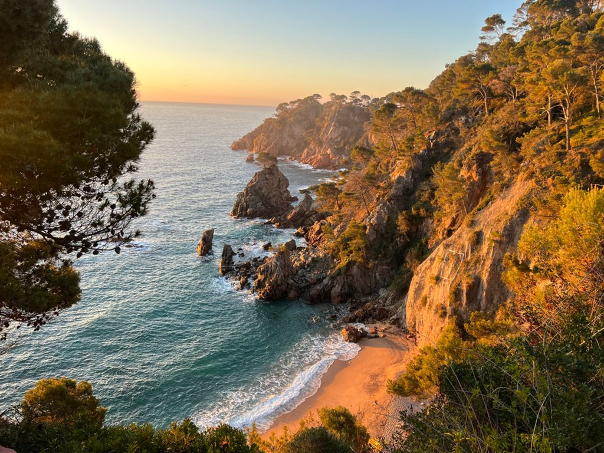
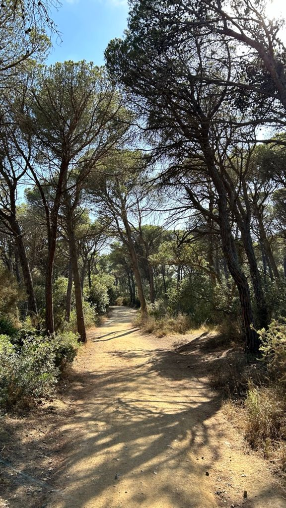
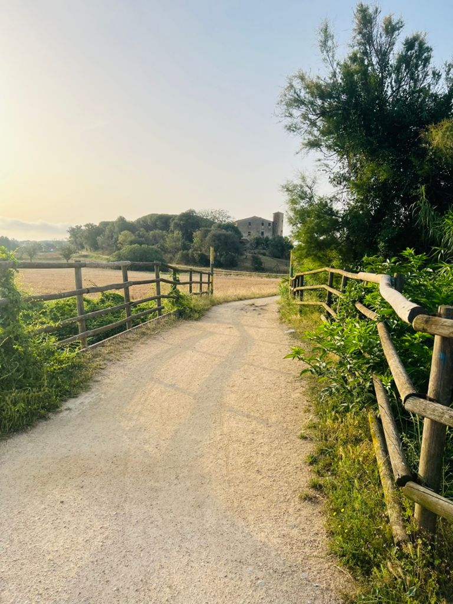
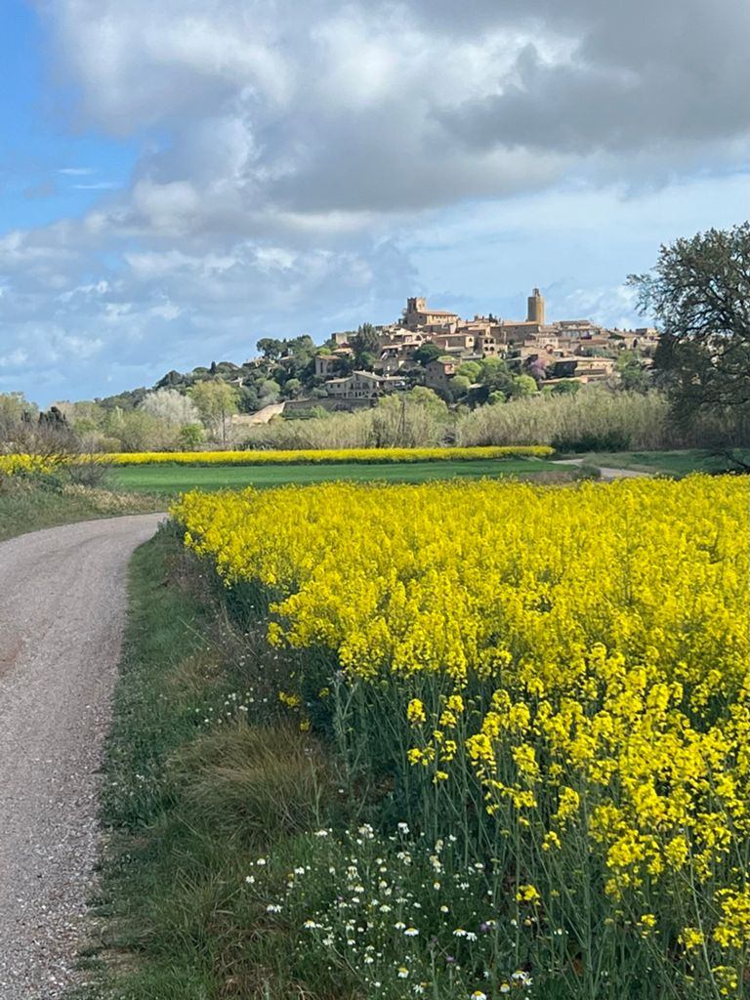
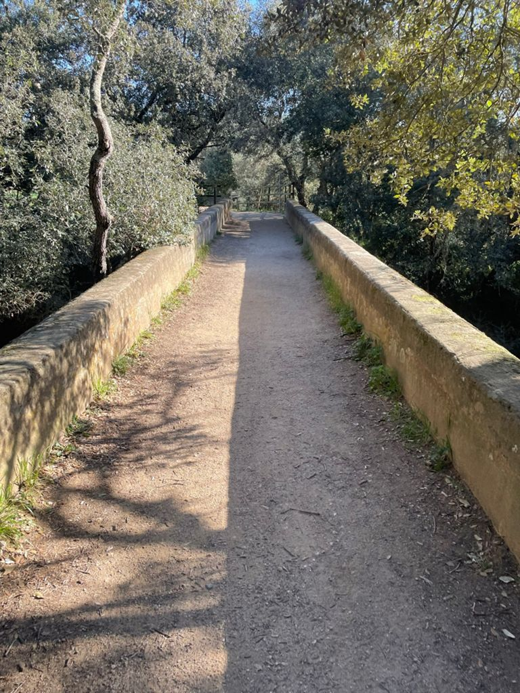
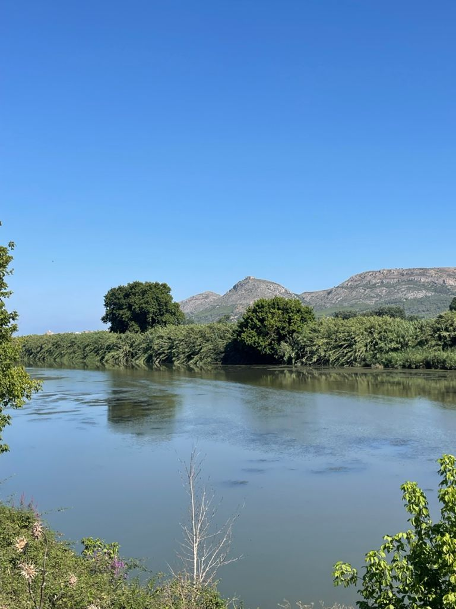
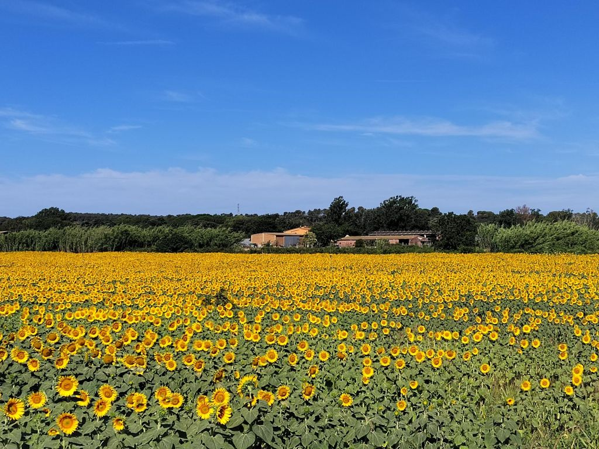
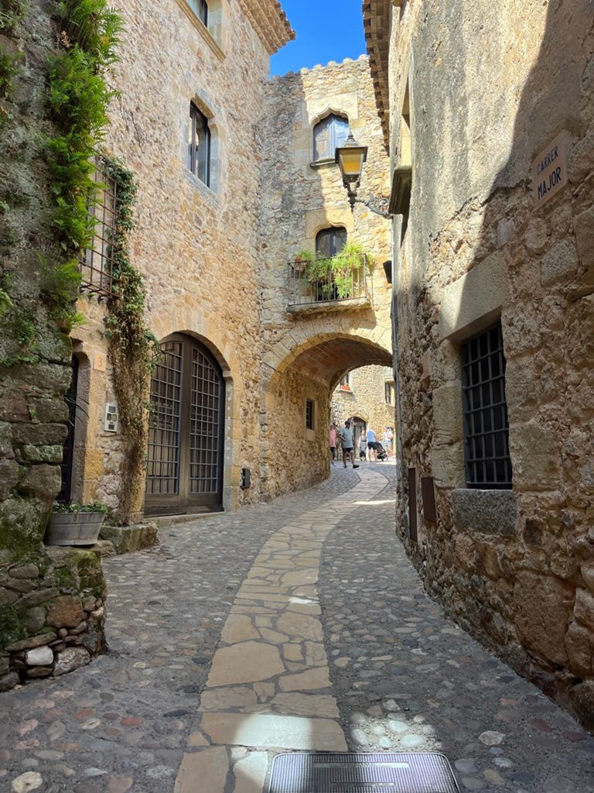
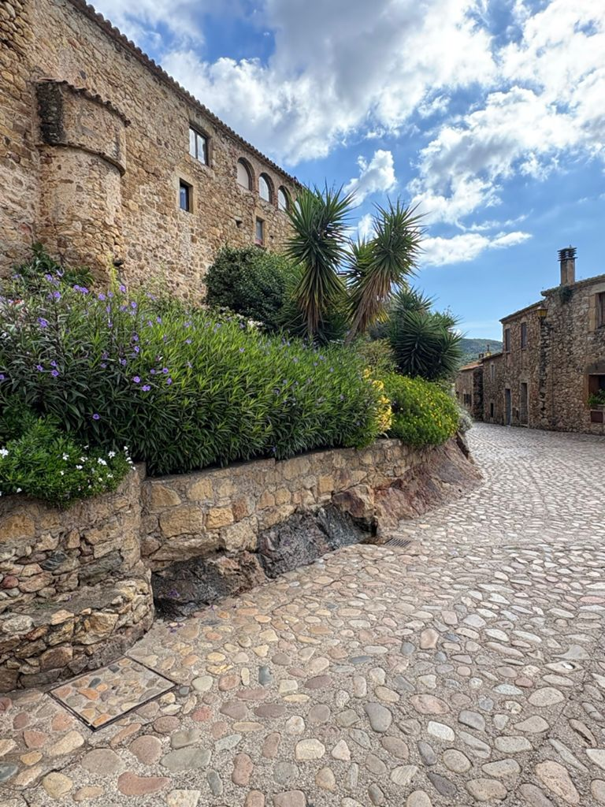

Ses Garites · Pals, Costa Brava
Some of Catalonia's finest cycling begins right outside our gate — from flat family rides through golden rice paddies to challenging climbs above the Costa Brava.
Ses Garites sits at the heart of the Baix Empordà — rice fields to the east, medieval hilltop villages to the west, and the wild Costa Brava coast just a short ride south. Whether you're a family looking for a gentle afternoon or a gravel cyclist hunting a real challenge, the terrain delivers.
Cycling routes
Both routes start directly from Ses Garites. Download GPS tracks and explore at your own pace.
A scenic loop through stunning coastal vistas and gravel tracks
Experience the magic of the Costa Brava as you pedal through rolling gravel tracks with sweeping coastal views. This route combines technical terrain with spectacular Mediterranean landscapes, passing through hidden villages and pine forests. Perfect for adventurous cyclists seeking authentic Catalan countryside.
Route photos





Rice fields, hidden villages, and authentic rural Catalonia
Immerse yourself in the heart of the Baix Empordà. This gravel adventure takes you through iconic rice paddies, past sunflower fields, and into picturesque Catalan towns. You'll discover why Josep Pla called this region "one of the most beautiful parts of Catalonia" — pedal at your own pace and soak it all in.
Route photos




Before you ride
We're happy to help with routes, conditions, and recommendations — just ask at check-in.
Aliveness Cycling — local specialist with road, gravel, MTB & e-bikes.
GPS tracks included.
Bravamar — closer to the beach, good for casual rides & e-bikes.
We recommend booking ahead in July & August.
Download the GPX files directly from each route above. Compatible with Komoot, Wikiloc, Garmin, and all major GPS apps.
Paper maps of the Baix Empordà cycling network are available at the Pals tourist office (5 min away).
Water (at least 1.5–2L), sun cream, and a snack.
In summer, start before 10am for best conditions.
A basic repair kit and spare tube are essential on gravel routes.
We have a bike pump and tools available at the property.
Grava Pals — off-the-grid bike café in Pals, perfect for cyclists.
Coffee, tapas, gravel vibes.
Can Padres — legendary rotisserie chicken just outside Pals.
A classic post-ride reward.
Beach bars at Platja de Pals open June–September.
The Empordà is known for its strong northerly wind — the Tramuntana. It can make cycling difficult and is strongest in winter and spring. On windless days, the open rice fields feel magical. Check the forecast: windy.com is reliable.
We have secure bike storage, a garden hose to clean bikes after muddy rides,
and a shaded area to repair or prep your bike.
Ask us at check-in for current route conditions, seasonal recommendations,
and which tracks to avoid after rain.
When to ride
The Empordà offers cycling in every month, but each season has a character of its own.
Spring (Apr–Jun) ★
The sweet spot. Warm days, the rice fields freshly flooded, wildflowers on the roadsides, and no summer crowds. Our favourite season for gravel riding.
Summer (Jul–Aug)
Hot — start early morning before 10am and you'll be rewarded. The rice fields are at their most lush and intensely green. Plan shorter rides in the heat.
Autumn (Sep–Oct) ★
Arguably the best. Harvest season turns the fields golden, the light is extraordinary, and the roads are quiet. Perfect temperatures for long gravel rides.
Winter (Nov–Mar)
Mild and peaceful. The Tramuntana wind can be strong — check forecasts. On calm days, the light and solitude are unbeatable for introspective gravel cycling.
Ready to explore
Wake up to rice fields, clip in, and discover the Empordà at your own pace. The best gravel routes in Catalonia start right outside our gate.
Check availability